Convierto ideas y problemas reales en soluciones funcionales, combinando ingeniería, software, automatización e IA aplicada. I enjoy turning ideas into working products by combining engineering, software, automation and applied AI.
"No suelo interpretar 'no sé hacerlo' como 'no puedo hacerlo'. Lo interpreto como: todavía no sé cómo hacerlo." "I don't read 'I don't know how' as 'I can't.' I read it as: I don't know how yet."Nota personalPersonal note
Soy estudiante de Ingeniería en Mecatrónica, área de Automatización, en la Universidad Tecnológica de la Sierra Hidalguense (Hidalgo, México), con graduación prevista para abril de 2027. Mi trabajo se mueve entre la ingeniería, el software y la IA aplicada: identifico procesos reales que funcionan mal —un gimnasio con registros en papel, una línea de inspección de calidad que consume miles de horas al año— y construyo soluciones funcionales de principio a fin, desde el circuito hasta la interfaz. I'm a Mechatronics Engineering student, Automation track, at Universidad Tecnológica de la Sierra Hidalguense (Hidalgo, Mexico), graduating around April 2027. My work sits between engineering, software and applied AI: I look for real processes that aren't working — a gym running on paper logs, a quality-inspection line burning thousands of hours a year — and build functional solutions end to end, from the circuit to the interface.
Fuera del laboratorio soy lector y escritor por gusto propio — psicología, neurociencia, desarrollo personal — y esa costumbre de pensar por escrito es, honestamente, parte de por qué este sitio se ve como una bitácora: cuaderno de ingeniería por un lado, cuaderno de ideas por el otro. Outside the lab I read and write for the sake of it — psychology, neuroscience, personal development — and that habit of thinking on paper is, honestly, part of why this site looks like a logbook: an engineering notebook on one side, a notebook of ideas on the other.
Nota: las cifras de impacto mostradas en este sitio (tiempos, usuarios, horas ahorradas) son estimaciones basadas en observación directa, no mediciones certificadas — se presentan así intencionalmente. Note: the impact figures on this site (times, users, hours saved) are estimates based on direct observation, not certified measurements — presented that way on purpose.
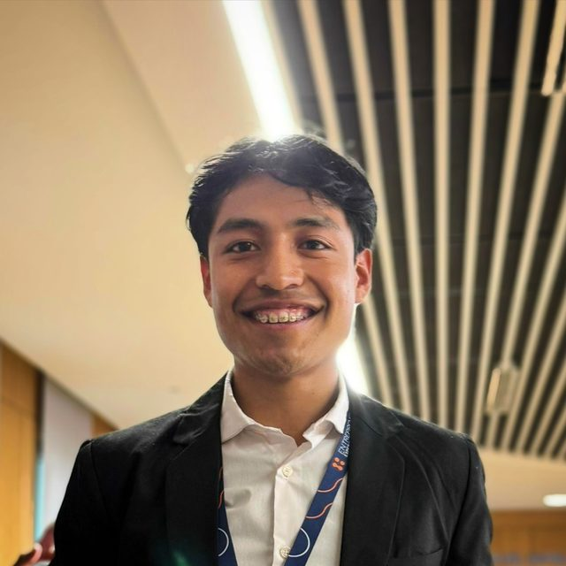
El mismo recorrido, proyecto tras proyecto: The same route, project after project:
Un gimnasio tradicional llevaba entradas y pagos en libreta: membresías vencidas que seguían entrando, tiempo perdido en recepción, registros perdidos. Desarrollé un sistema de identificación por huella integrado con gestión de membresías, pagos e historial de acceso. A traditional gym tracked entries and payments on paper: expired memberships that kept getting in, time lost at the front desk, missing records. I built a fingerprint-based identification system integrated with membership management, payments and access history.
El reto técnico central fue integrar un lector de huellas DigitalPersona U.are.U 4500 —con un SDK antiguo dependiente del ciclo de mensajes de Windows Forms— con una interfaz web en Flask. Lo resolví separando responsabilidades: un servicio biométrico en C#/.NET 4.8 que conserva el ciclo de mensajes requerido, comunicado por HTTP local con la interfaz Flask/HTML/JS. The core technical challenge was integrating a DigitalPersona U.are.U 4500 fingerprint reader — running on an old SDK tied to the Windows Forms message loop — with a Flask web interface. I solved it by separating concerns: a C#/.NET 4.8 biometric service that keeps the required message loop, talking to the Flask/HTML/JS interface over local HTTP.
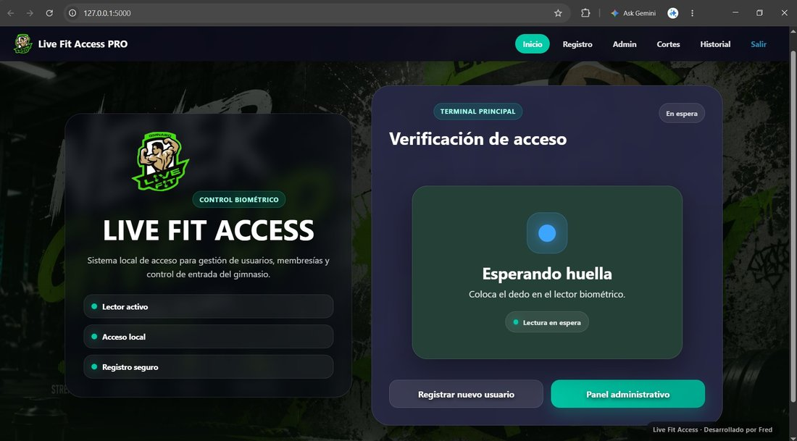
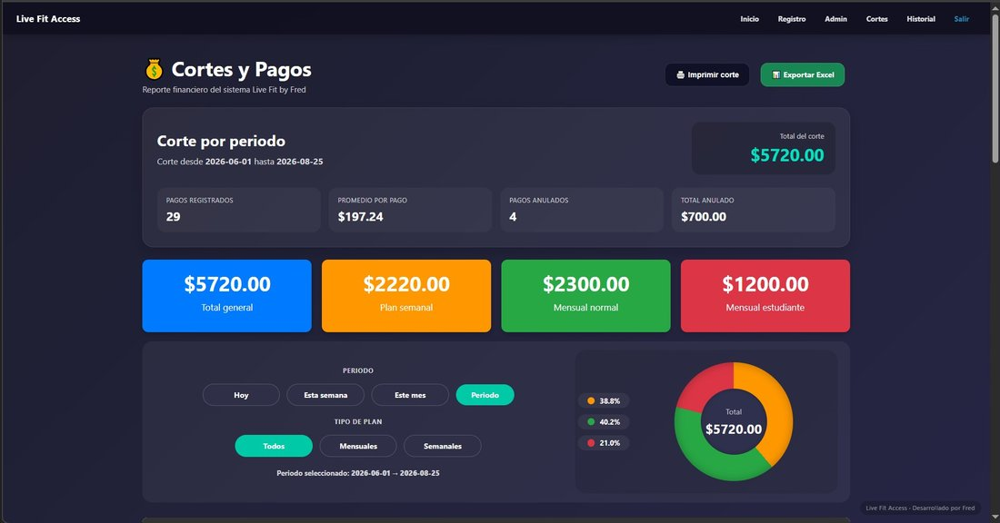
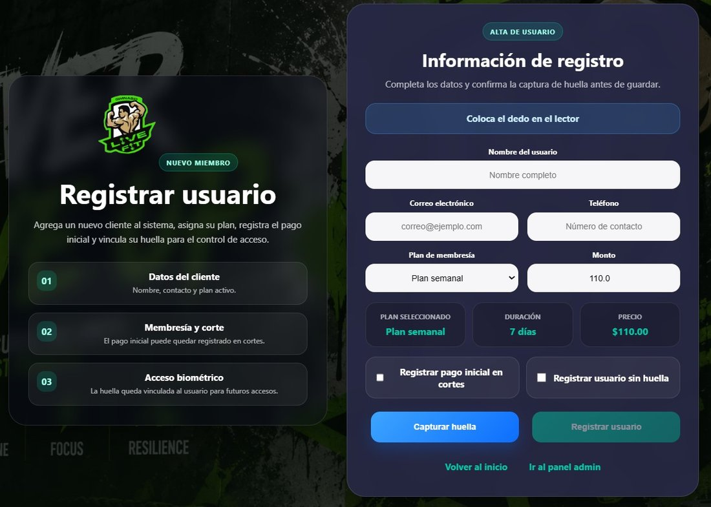
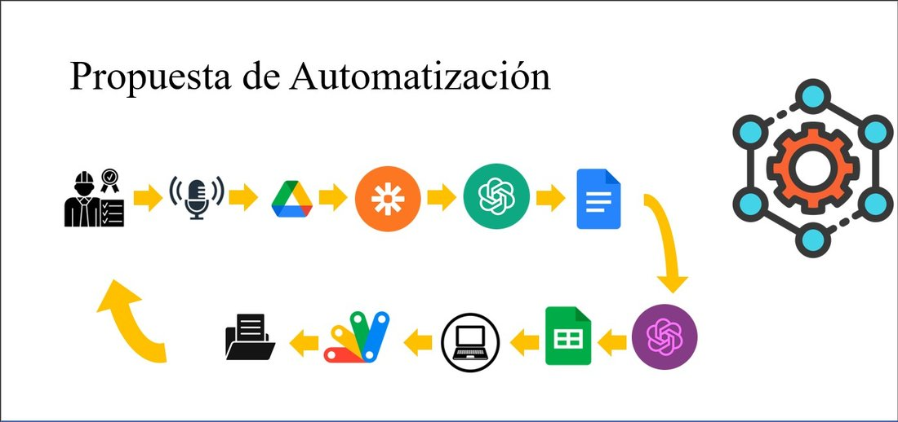
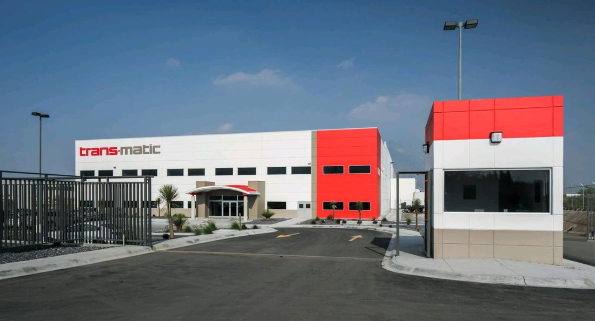
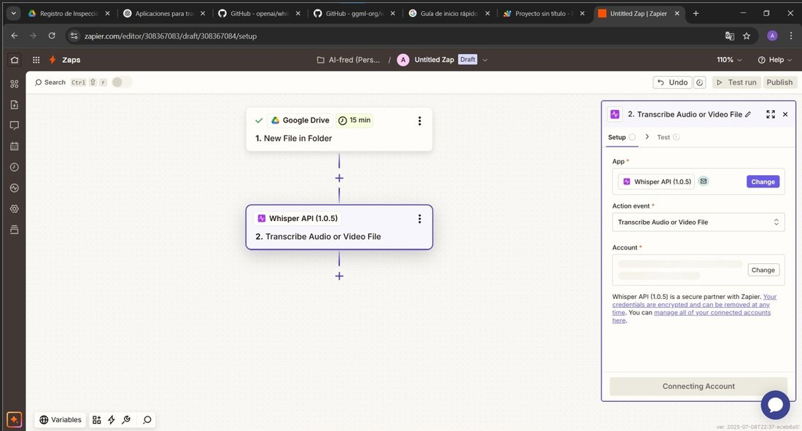
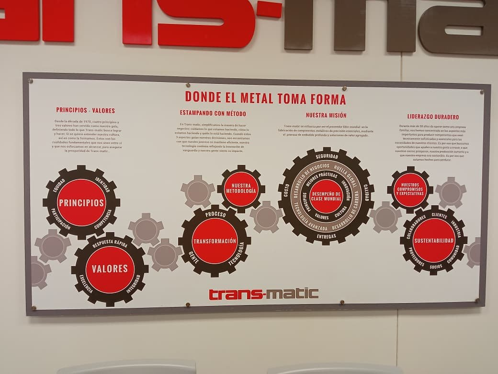
Durante mi práctica como Inspector de Calidad noté que el registro de inspecciones seguía haciéndose a mano y capturándose después en Excel — una iniciativa propia, no una tarea asignada. Diseñé una prueba de concepto: nota de voz → Whisper (speech-to-text) → estructuración con un LLM → Google Sheets → reporte automático vía Apps Script. During my Quality Inspector internship I noticed inspection records were still handwritten and later typed into Excel — a self-initiated idea, not an assigned task. I designed a proof of concept: voice note → Whisper speech-to-text → LLM-based structuring → Google Sheets → automated reporting via Apps Script.
Quedó como prueba de concepto (no en producción) por condiciones contractuales de la práctica sobre propiedad de proyectos — una decisión estratégica, no una limitación técnica no resuelta. It stayed a proof of concept (not deployed to production) due to internship contract terms around project ownership — a strategic call, not an unresolved technical limitation.
Nació de un proyecto de Control Automático combinado con una afición personal por la jardinería. En vez del típico "control de humedad", construí un sistema embebido autónomo: el Arduino decide y actúa solo (sensor → relé → bomba), y una app de escritorio en Python/PySide6 sirve solo para monitorear y configurar parámetros. It grew out of a Control Systems course combined with a personal interest in gardening. Instead of the typical "moisture control" project, I built an autonomous embedded system: the Arduino decides and acts on its own (sensor → relay → pump), while a Python/PySide6 desktop app is only there to monitor and configure parameters.
El aprendizaje más honesto: mi primera calibración (0–1023 dividido entre 100) no representaba humedad real. Lo corregí midiendo experimentalmente tierra seca, saturada y en rango óptimo durante ~20 minutos cada una, y reconstruí la calibración con datos reales. The most honest lesson: my first calibration (raw 0–1023 divided by 100) didn't represent real moisture. I fixed it by experimentally measuring dry, saturated and optimal soil for ~20 minutes each, and rebuilt the calibration from real data.
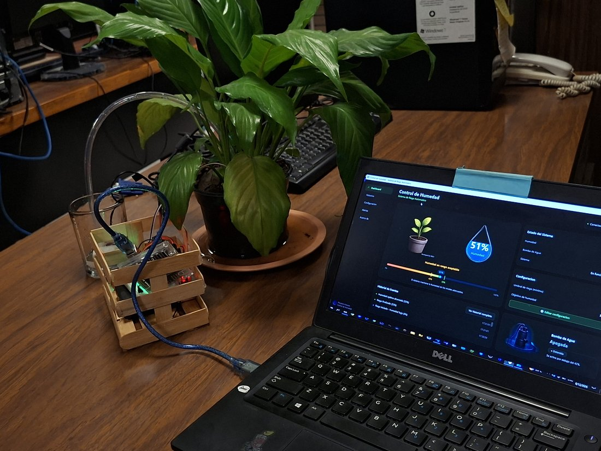
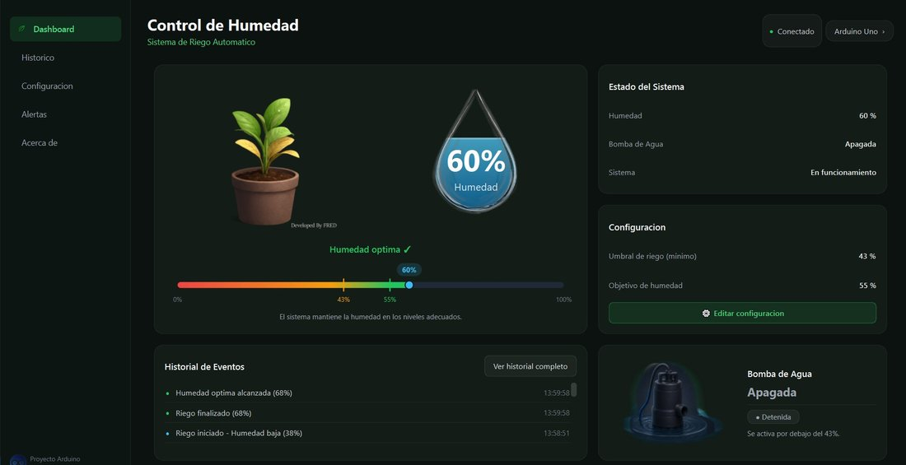
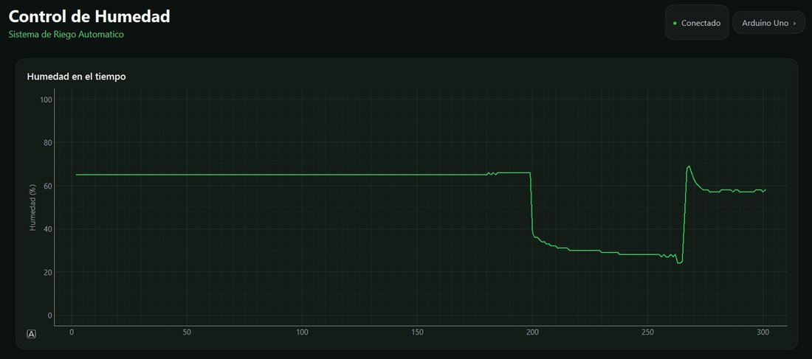
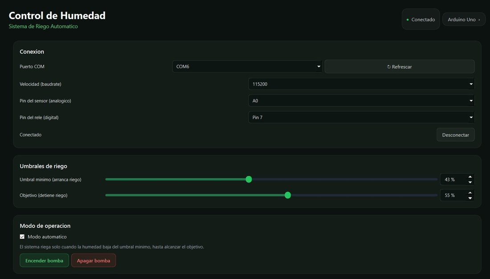
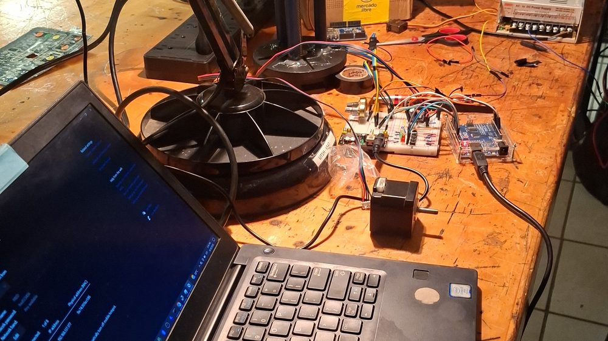
Brazo tipo SCARA capaz de desplazarse a una posición X, Y, Z. Programé las ecuaciones de cinemática inversa que traducen coordenadas en movimiento del motor a pasos y los dos servomotores, diseñé el circuito eléctrico, coordiné al equipo y apoyé el diseño mecánico en SolidWorks. A SCARA-type arm able to move to a target X, Y, Z position. I wrote the inverse-kinematics equations that translate coordinates into stepper and servo motion, designed the circuit, coordinated the team, and supported the mechanical design in SolidWorks.
Incluso terminado, seguí pensando en la siguiente versión: una interfaz de computadora para introducir coordenadas sin tocar el código — una costumbre recurrente en cómo trabajo. Even after it worked, I kept thinking about the next version: a computer interface to input coordinates without touching the code — a recurring habit in how I work.
Capitán de un equipo de 6 en un concurso estatal de robótica y STEM; después mentoricé a otros estudiantes en brazos Dobot y visión artificial.Captained a 6-student team at a state robotics/STEM competition; later mentored other students on Dobot arms and computer vision.
Seleccionado como el más joven (18 años) de 5 delegados universitarios; desarrollé y presenté un pitch de producto ante inversionistas en 3 días.Selected as the youngest (18) of 5 university delegates; developed and pitched a product concept to investors over 3 days.
Entrepreneurial Experience, ESIC Madrid — 1 de ~50 seleccionados entre casi 10,000 aplicantes.Entrepreneurial Experience, ESIC Madrid — 1 of ~50 selected from nearly 10,000 applicants.
Beca de desempeño completo para el Entrepreneurial Simulator en Nueva York; hoy Embajador de TrepCamp en mi estado.Full performance-based scholarship for the Entrepreneurial Simulator in New York; now TrepCamp Ambassador for my state.
5 días de formación práctica en semiconductores, chips y medición de transistores.5 days of hands-on training in semiconductors, chips and transistor measurement.
Curso aplicado sobre construcción de apps con IA generativa.Applied course on building apps with generative AI.
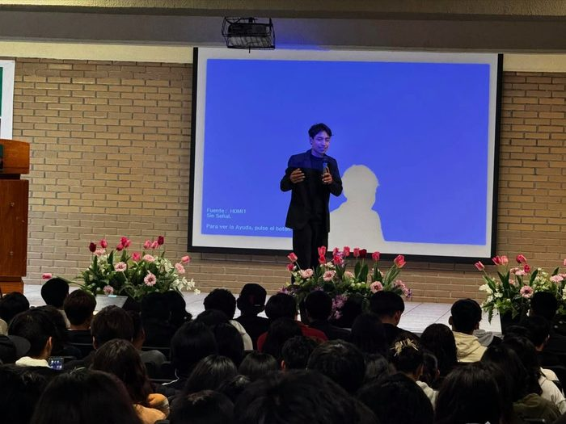
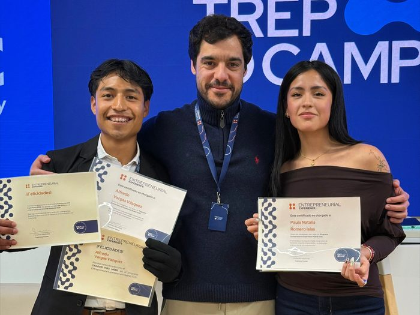
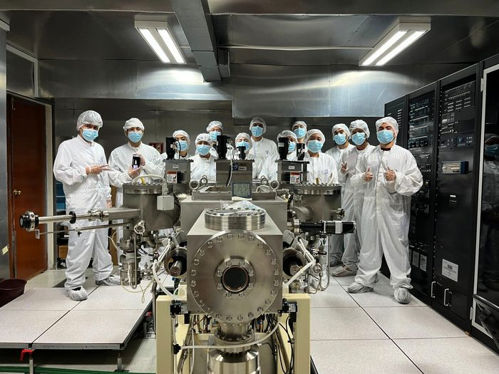
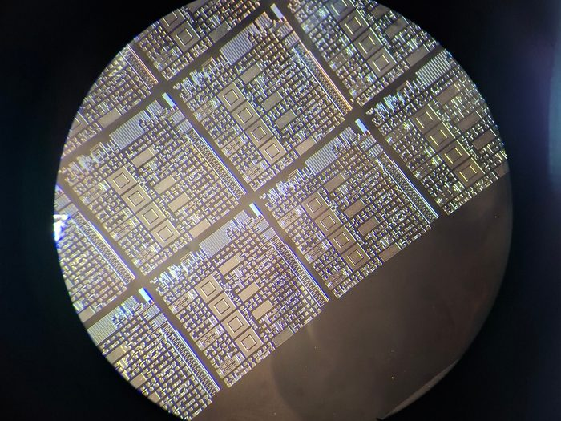
Estoy buscando activamente una práctica internacional en robótica, automatización, IA aplicada o software, a partir de enero de 2027. I'm actively looking for an international internship in robotics, automation, applied AI or software, starting around January 2027.